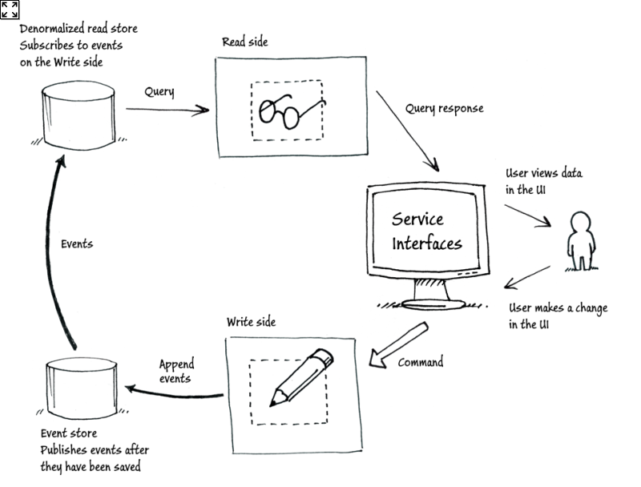
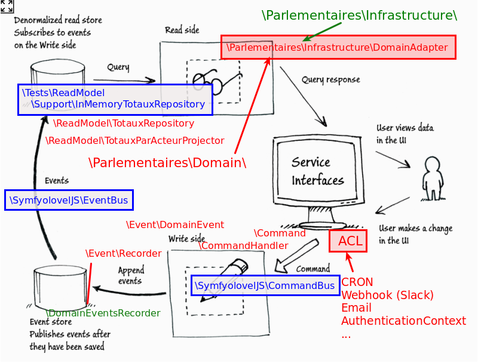

class: center, middle # CQRS / ES Les mains dans le camboui ! @pierremartin --- # Au programme 1. CQRS 2. Event Sourcing 3. L'application 4. À vous de coder 5. Débriefing --- # CQRS -- ## **C**ommand **Q**uery (**R**esponsibility) **S**egregation -- ```php // Command public function save($data) { $this->db->insert($data); return $data; // <-- Nope! } ``` -- ```php // Query public function get($id) { $this->id = $id; // <-- Nope! return $this->db->first(['id' => $id]); } ``` -- Appliqué à des classes entières --- # Event Sourcing .center[] --- # L'application Analyse de l'usage des Réserves Parlementaires -- ```bash $ git clone https://github.com/real34/cqrs-es-camboui ``` Voir le `README`, section `Lancement initial` --- # Démo pas à pas ... avec XDebug (cf `Dockerfile`) --- # À vous de coder (cf README) -- .center[] --- # Débriefing .center[<iframe src="//giphy.com/embed/12wRRjUwD2Dh2U" width="480" height="360" frameBorder="0" class="giphy-embed" allowFullScreen></iframe>]